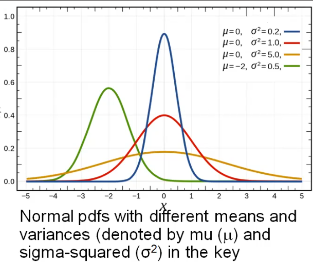

normal distribution probability models
Normal Distribution
Notes:
- Used for sums of random variables
- Characterized by 2 numbers:
- mean (mu)
- standard deviation (sigma-squared)
- They have continuous outcomes (weight, cost, time, etc)

Example:
- 95% prediction interval for normal distribution:
- Problem: Each customer spends a random amount of money, mean = $25, SD = $5. What is a 95% PI for the amount spent by a randomly selected customer?
- Solution: mean +/- 2 * sd = 25 +/- 2 * 5, so 95% PI is [$15, $35]
- 95% of normal probability density function is within 1.96 * SD of its mean.
- 1.96 is often rounded to 2.
Notes:
- Prediction Interval (PI) – an estimate of an interval in which a future observation will fall, with certain probability, given what has already been observed.
- Confidence Interval – an estimated interval within which an unknown parameter may plausibly lie.
- It describes ranges of parameter values that are consistent with data.
- Confidence Level – a probability with which an estimated interval will plausibly contain the value of a parameter.
dnorm(x, mean=n, sd=m) # returns the probability density function (PDF) at x for a normal
# distribution with parameter values specified for its mean and
# standard deviation.
pnorm(x, mean=n, sd=m) # returns the cumulative distribution function (CDF); used to find
# probabilities that the outcome falls in a specified interval.
Inverse-CDF Function (Quantile Function) (Q) (qnorm)
Notes:
- Inverse functions start on the Y axis and read off of the X axis to find the value for the input on the Y axis.
qnorm(p, mean, sd) # returns value Q such that fraction p of a normal distribution is less than Q.
- Q becomes the p-th “quantile”
- This is the inverse of the CDF (pnorm())
Example:
- A customer’s spend is normally distributed with mean = $25, sd = $5. What dollar amount do 99% of customers spend more than?
qnorm(0.5, 0, 23)
13.37
Example (95% prediction interval for normal distribution)
- Quesetion: Each customer at a store spends a random amount of money with mean = $25 and SD = $5. What is a 95% prediction interval (PI) for the amount spent by a randomly selected customer?
mean +/- 2 * SD = 25 +/- 2 * 5, so 95% PI is [$15, $35] (this uses 2 as an approximation for 1.96)
Example (pnorm)
- Question: If a customer’s expenditures are normally distributed with mean = $25 and SD = $5, what is the probability that the customer spends less than $20?
pnorm(20, 25, 5)
0.1586553
Practice
Practice with pnorm()
- Q: The waiting time at a shop is approximately normally distributed with mean = 75 minutes and SD = 25 mins. What is the probability that a customer’s waiting time will exceed 90 minutes?
- A:
1 - pnorm(90, 75, 25)= 0.226- Q: What fraction of customers are predicted to have waiting times of less than 60 minutes?
- A:
pnorm(60, 75, 25)= 0.226 § Q: What is the waiting time that only 5% of customers exceed? § A:qnorm(0.95, 75, 20)= 107.9 minutes
- Q: An insurance pool pays a random number of claims per year. Suppose that the number of claims is modeled as a normal distribution with mean = 600 and SD = 15.49. What is the probability that the number of claims is less than 630?
- A:
pnorm(630, 600, 15.49)= 0.973 - Q: A gas station seels a random amount of gas per day. Amount sold per day has a normal distribution with mean = 5400 gallons and SD = 150 gallons. How much gasoline should the station “stock” at the start of the day to keep the probability of running out by the end of the day <= 2%?
- A:
qnorm(0.98, 5400, 150)= 5708.06 gallons. If the gas station stocks 5708.06 gallons, there is a 98% probability that daily demand will be less than this, and hence a 2% probability of running out.
Practice CDF calculations
- Q: Finish times for runners a normally distributed with mean = 200 mins, SD = 30 mins. What is the probability that a runner will complete the marathon within 3 hours?
- A:
pnorm(180, 200, 30)= 0.252- Q: By what time will 10% of runners have completed the marathon?
- A:
qnorm(0.10, 200, 30)= 161.55 § Q: What fraction of runners will complete the marathon between 3 and 4 hours? § A:pnorm(240, 200, 30) - pnorm(180, 200, 30)= 0.656